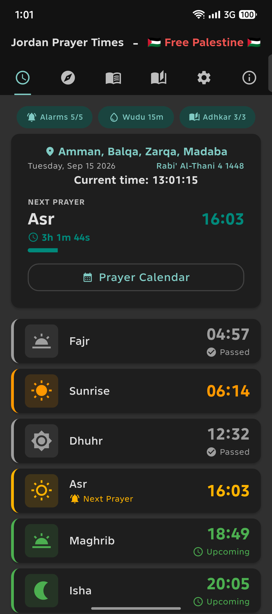
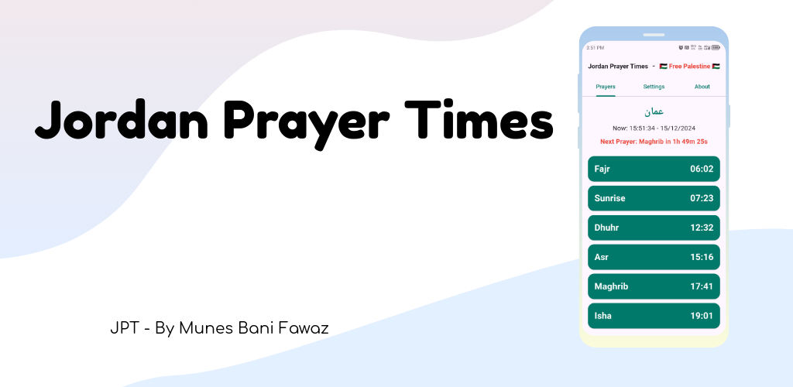
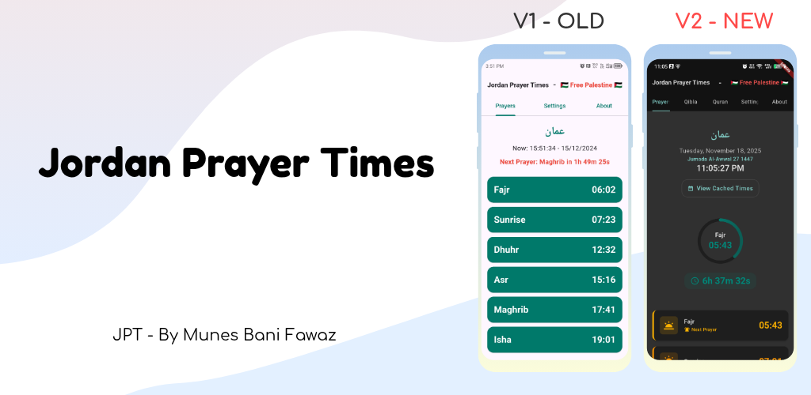
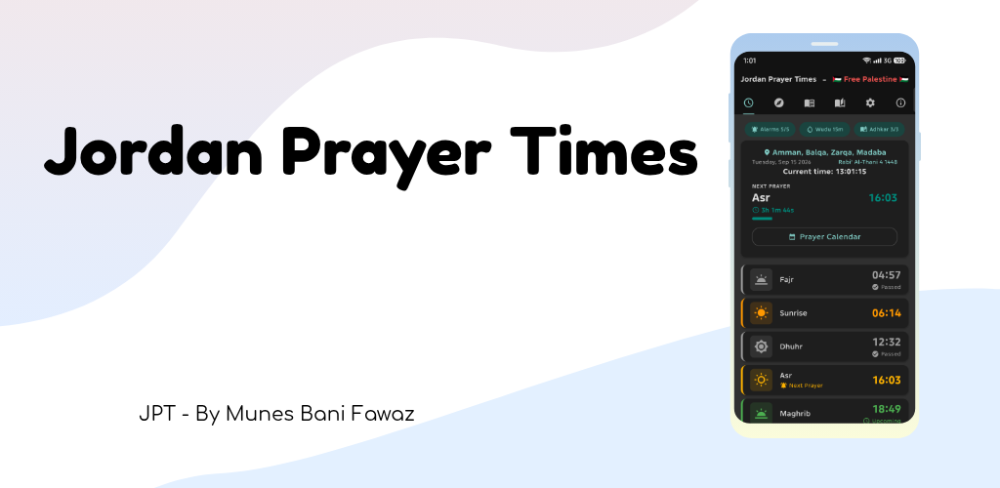

Accurate prayer times
Fajr, Sunrise, Dhuhr, Asr, Maghrib and Isha for all 34 cities in Jordan, sourced directly from the official Ministry of Awqaf website.
Accurate prayer times for all 34 cities in Jordan, straight from the Ministry of Awqaf. The athan rings on time even with the app closed, on your phone, your wrist and your TV.

Phones and tablets, with layouts for both
Wear OS watches, with a watch face complication
Android TV, with a screensaver of Jordan's mosques
Home screen widgets you can style
Months of times saved for offline use
Fajr, Sunrise, Dhuhr, Asr, Maghrib and Isha for all 34 cities in Jordan, sourced directly from the official Ministry of Awqaf website.
Scheduled through Android's alarm clock, so it fires even with the app closed. Pick one of 5 athan recitations, a chime, or any sound on your device.
Phones silently drop alarms to save battery. The app checks its alarms, re-arms whatever the system dropped, and tells you if one was missed.
The Medina mushaf layout, with audio from several reciters, translations, full-text search, bookmarks and tafsir.
A compass pointing to Makkah with a live GPS map, and a vibration when you're lined up.
287 adhkar from Hisnul Muslim in 11 categories, each with its reference. A tap-to-count tasbih with vibration, and favourites.
A wudu reminder 5, 10 or 15 minutes before each prayer, plus morning, evening and sleep adhkar reminders that follow your prayer times.
The next prayer with a live countdown, or today's five times. Any size, with their own theme, transparency, colours and language.
The Hijri date beside the Gregorian one, with Islamic month names in Arabic and English, and a manual adjustment.
A full interface in both languages, right to left in Arabic, with Arabic numerals.
After the first setup, months of prayer times stay on the device. A light sync every few hours keeps them fresh and saves battery.
A clean Material Design 3 look, with a dark mode tuned for OLED screens and a countdown to the next prayer.
Suhoor and iftar, during Ramadan only. The app knows when that is.
On Fridays only, in time to leave for the khutbah.
Tomorrow's alarms are set as soon as today's last prayer rings, with checks in between.
Pick any sound on your device, per prayer and per reminder.
Theme, transparency, text colours and even language, separate from the app.
Optional, with its own sound. For Duha, or not to sleep past it.
Snooze five minutes, or silence the athan with any volume key.
Every alarm that fired and how late, plus a reliability check for your phone.



From a simple list of times in 1.0 to an app that schedules itself on your phone, your watch and your TV.
Get the latest versionOne download from Google Play for your phone, your Wear OS watch and your Android TV.
Phone app · Wear OS & Android TV continued development
Wear OS: idea & first build
Android TV: idea & first build
Marwa Al Tarakieh
Omar Hamdan
Ayham Mazari Ibrahim Sabbah Jamil Afouri
Moneeb Shammout
Sarah Al Momani ❤️ My beloved wife ❤️
Issa Al Issawi Sabaa Al Momani Muhammad Abdullah Sohaib Yaghan Qais Hussain Ashar Al Momani Hazem Afaneh Omar Hamdan
All prayer times come from the official website, www.awqaf.gov.jo
Hisnul Muslim by Sa'id al-Qahtani is the source of the adhkar text, translations and references, via the open source muslim-data project.
Learned from its open source code how to build exact native Kotlin alarms that work even when the app is killed. github.com/Futsch1/medTimer
Learned from its behaviour to schedule with AlarmManager.setAlarmClock, which shows the alarm icon in the status bar and is exempt from Doze throttling. feirox.com/realarm
Jordan Prayer Times is made by Munes Bani Fawaz. Feedback and feature requests are always welcome.